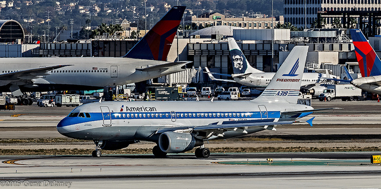
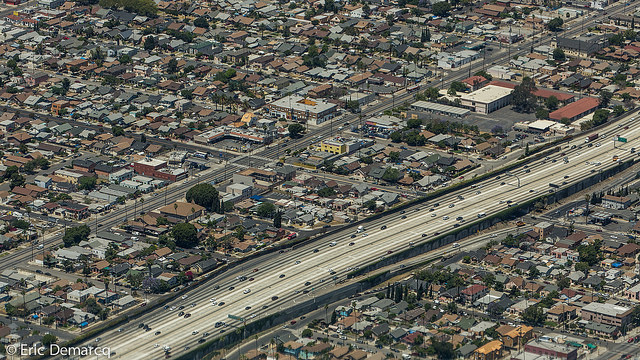
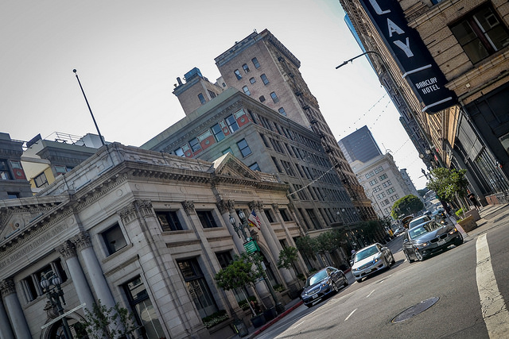
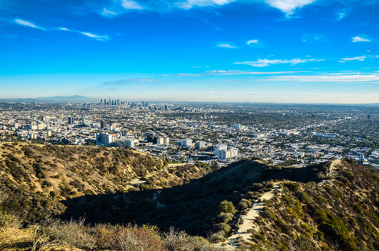
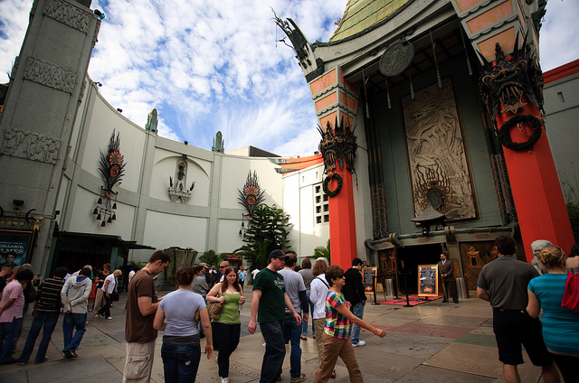
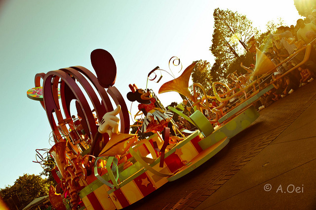
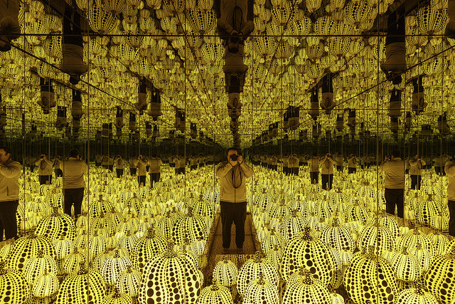
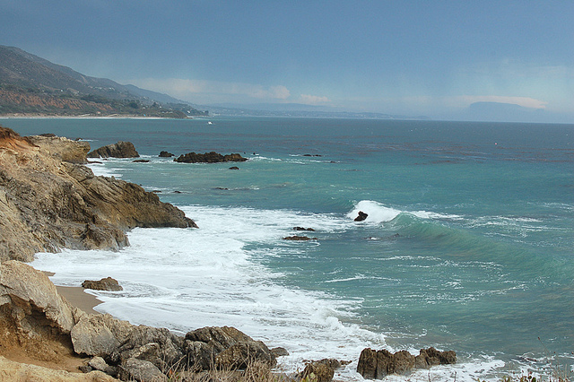

When people think Los Angeles, they think LAX. The airport is one of the largest in the world, and extremely convenient to Santa Monica and places South, but it can be a trek to Hollywood or places outside of the city. For those headed to Hollywood or Burbank, from domestic flights – consider Burbank airport instead. It’s much easier.

Though there is a subway system, mass transit in Los Angeles, is largely a joke. No one needs to rent a car in New York City, but in Los Angeles, you’d better think again. Uber is great in Los Angeles, but if you’ll be moving around frequently, drives can be over 20-30 minutes at a time and can really add up. Downtown Los Angeles to Beverly Hills can often take an hour.

Be very weary when choosing your hotel. Like we said, drives are long, so figure out what you want, and stay as nearby as affordably possible.
Famous People Everywhere. Celebrities really are everywhere in Los Angeles, especially in Beverly Hills, Santa Monica, Silverlake and Burbank. If you see one of these obscure creatures in the wild, treat them the same way you’d treat a mother bear in the woods.
Most museums are free. Los Angeles has some wonderful museums and attractions, from the Griffith Observatory to the LACMA. If the museum is not always free, it more than likely offers a few days or weeks of the month which are free.

For a different view of Hollywood, head to Runyon Canyon Park, one of the most popular hiking areas in L.A. Located just two blocks from bustling Hollywood Boulevard, Runyon Canyon is well-known for its frequent celebrity sightings and a 90-acre off-leash dog park.

Hollywood celebrities are never far away in LA. To catch a glimpse of stardust, stroll the Hollywood Walk of Fame, where more than 2,400 figures from the entertainment world are immortalized in pink terrazzo with symbolic gold lettering. If you're a film buff, look out for the famous hand and footprints at the Chinese Theatre.

You're never too old for Disneyland. This legendary theme park is packed with cool things to do, spread over seven lands and the adjacent California Adventure.

Yayoi Kusama's Infinity Mirrored Room transports viewers into a twinkling, pulsating starfield of LEDs. The 45-second-experience's wait time is measured in hours, so make sure to check into the first floor installation as soon as you step inside the museum—master its ticketing system to cut down on the entry line.

West of the city of Santa Monica, the beaches run east and west, creating a beautiful setting and making for some great surfing when conditions allow. Since the days of beach-blanket movies and Beach Boys songs, Malibu has exemplified Southern California beach culture.